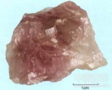

紫石英

拼音
Zǐ Shí Yīnɡ
别名
萤石、氟石
来源
本品为氟化物类矿物萤石族萤石，主含氟化钙 （CaF2）。采挖后，除去杂石。
生境分布
产浙江、江苏、辽宁、黑龙江、河北、湖南、湖北、甘肃等地。
药材特点
萤石，又名：氟石。 等轴晶系。晶体呈立方体、八面体、十二面体；集合体常呈致密粒状块体出现。颜色很少是无色透明的，大部分被染成各种颜色，如黄、浅绿、浅蓝、紫色及紫黑色等，以浅绿、紫色和紫黑色者为最常见，其色可因加热、压力、X射线、紫外线等而改变，加热时能失去色彩，而受X射线照射后，又恢复原色。条痕白色。玻璃光泽。透明至微透明。解理依八面体。断面呈贝壳状。硬度4。比重3.18。加热后显萤光。主要产于热液脉中。
性状
本品为块状或粒状集合体。呈不规则块状，具棱角。紫色或绿色，深浅不匀，条痕白色。半透明至透明，有玻璃样光泽。表面常有裂纹。质坚脆，易击碎。气无，味淡。
性味
甘，温。
功能主治
镇心安神，温肺，暖宫。用于失眠多梦，心悸易惊，肺虚咳喘，宫寒不孕。
用法用量
9～15g，打碎、先煎。
化学成分
主要为氟化钙，纯品含钙51.2％，氟48.8％，但常有杂质氧化铁和稀土元素。
药理作用
1：无药理作用数据
摘录
《中国药典》